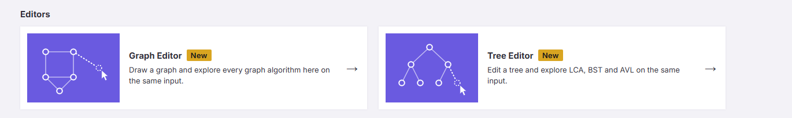
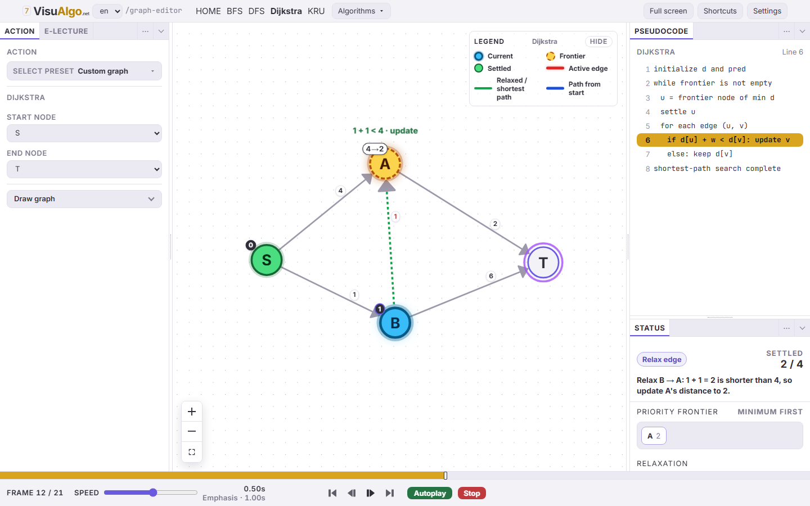
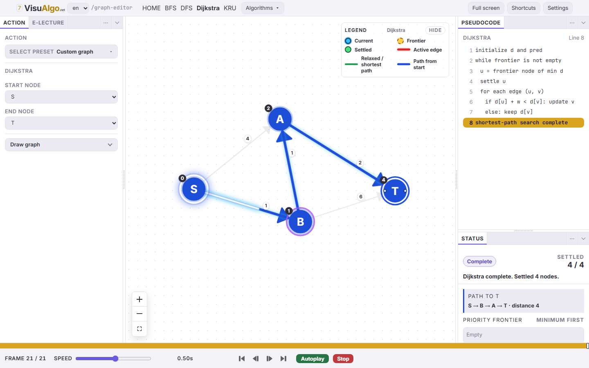
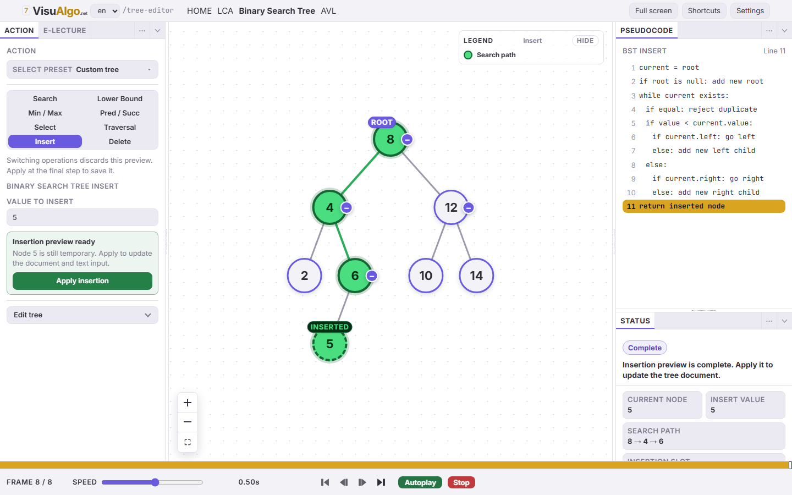
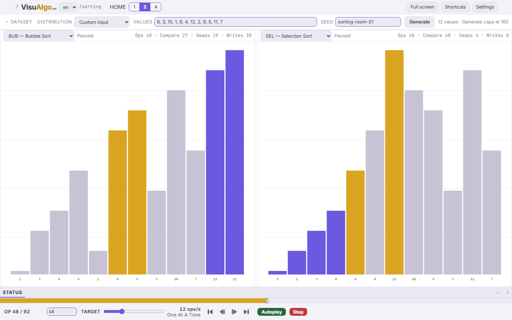
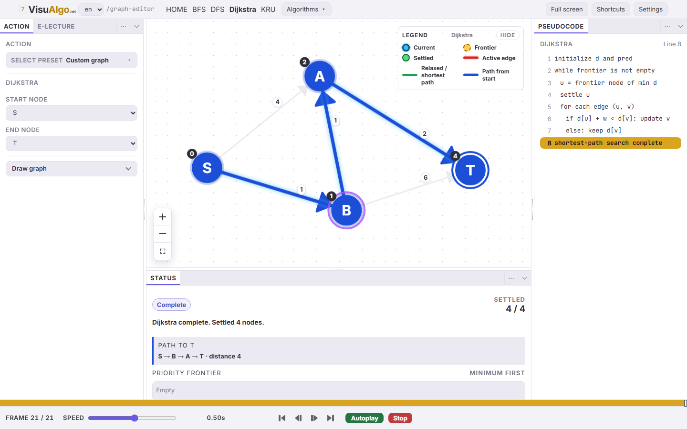
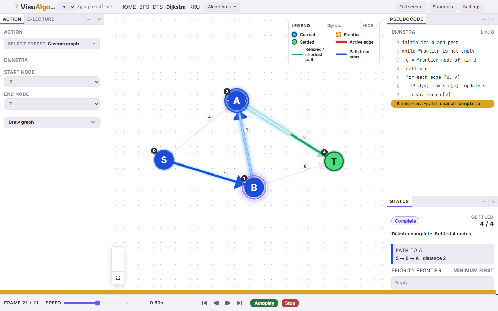
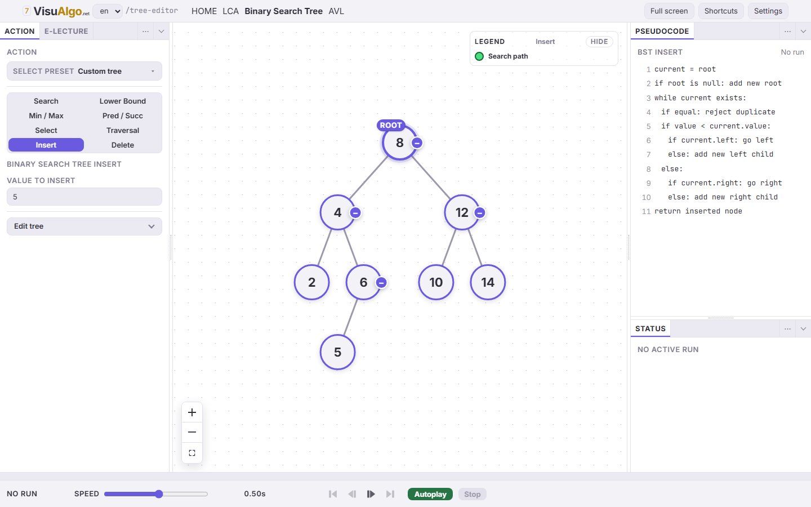

Editor entry pointsBắt đầu từ input của mìnhStart with your own input.01_editor_entry_points.png
A decision beside the nodeGhi chú trên đỉnh A, frame 12Explain the decision where it happens.02_dijkstra_decision.png
Explore the finished resultĐường đi đến T, tổng 4A finished run is still explorable.03_dijkstra_final_path_t.png
Preview before ApplyInsert(5), chưa sửa cây gốcExplore a change before applying it.04_tree_insert_preview.png
Compare on the same inputBubble và Selection, operation 48Same input. One playback clock. Different operations.05_sorting_compare.png
Arrange the workspaceStatus xuống dưới, run còn nguyênArrange the workspace around the task.06_v10_layout.png
Paused motion + step + drag7,8s · xem counter 11 → 12The frame is paused; the emphasis is still moving.01_graph_paused_step.mp4
Sorting shares one clock10,4s · play/pause/resume/LastCompare the steps side by side.02_sorting_shared_clock.mp4
Same result, another targetDự phòng · hover A, tổng 2A different target, without another run.01_dijkstra_final_path_a.png
After ApplyDự phòng · 5 đã thuộc inputApply commits the preview.02_tree_insert_applied.png